En esta galería se muestran fotografías de la época de cuando, aproximadamente, fue fundado el Colegio
Antiguo Ayuntamiento
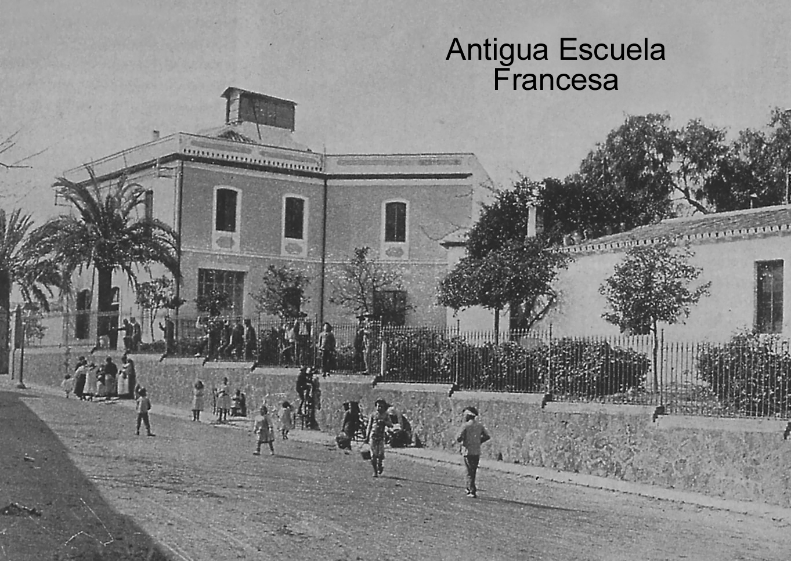
École Française
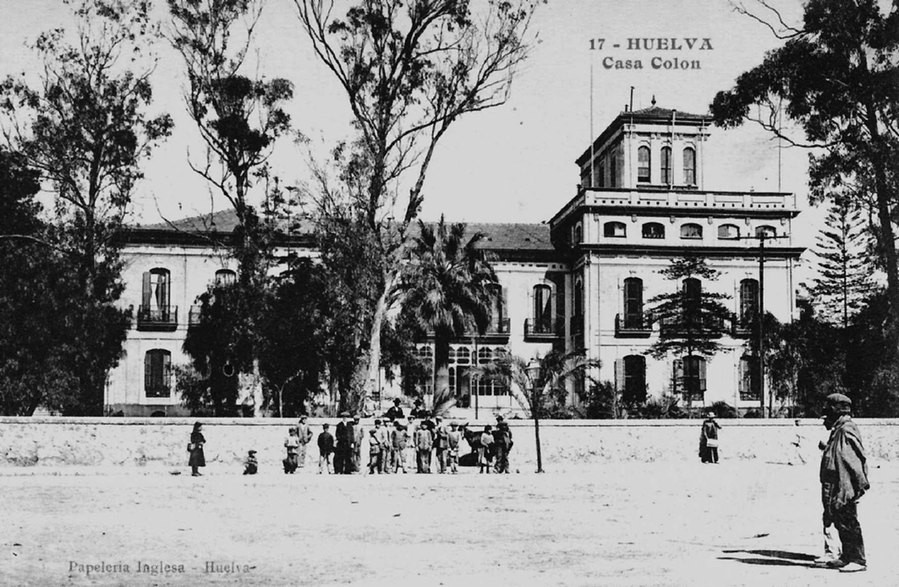
Casa Colón
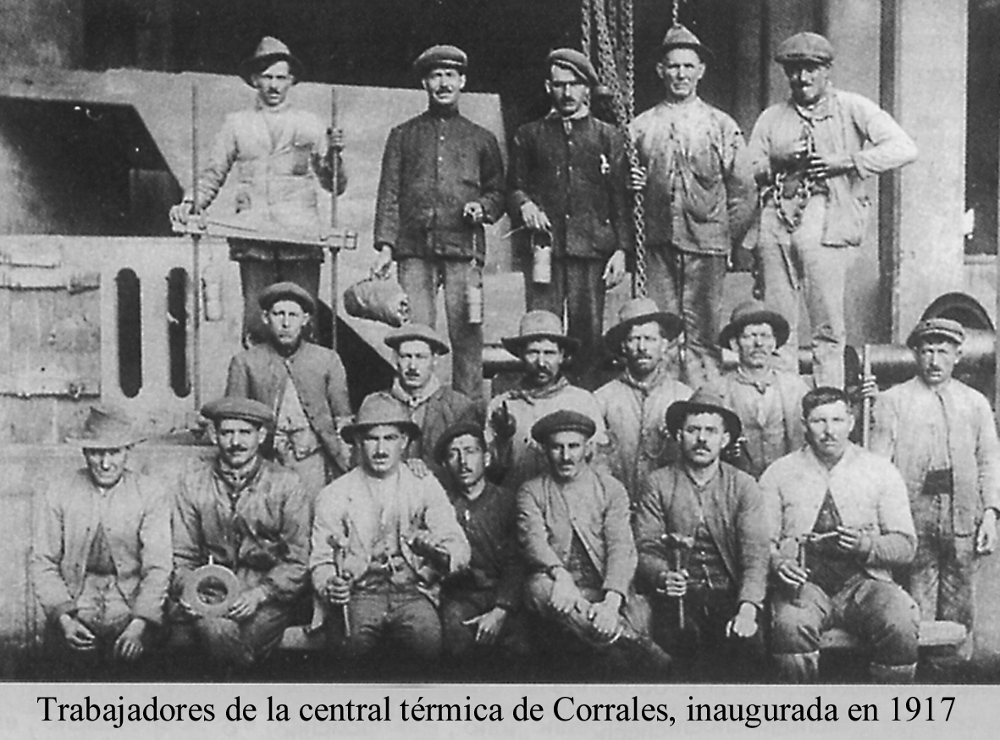
Corrales
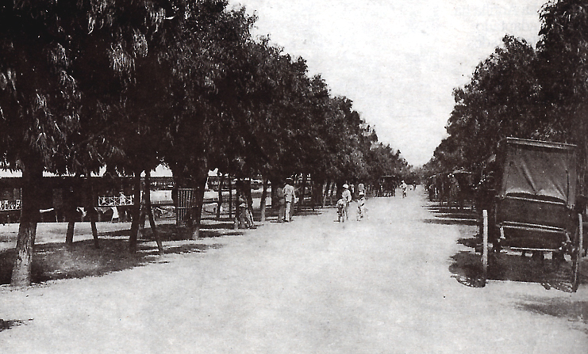
Av. Francisco Montenegro
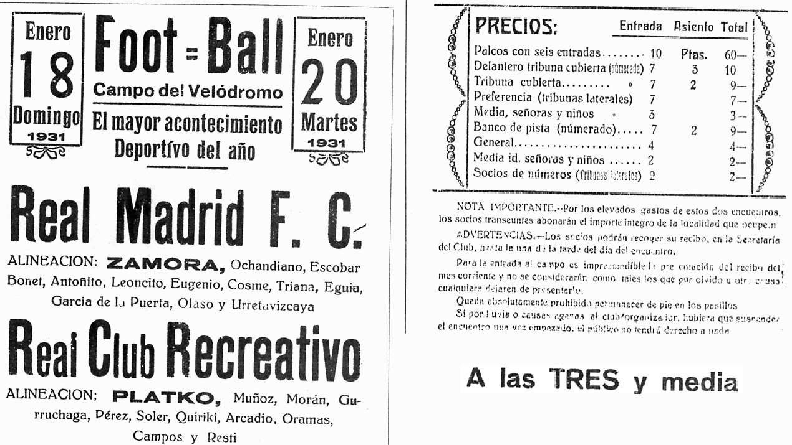
Entrada de fútbol
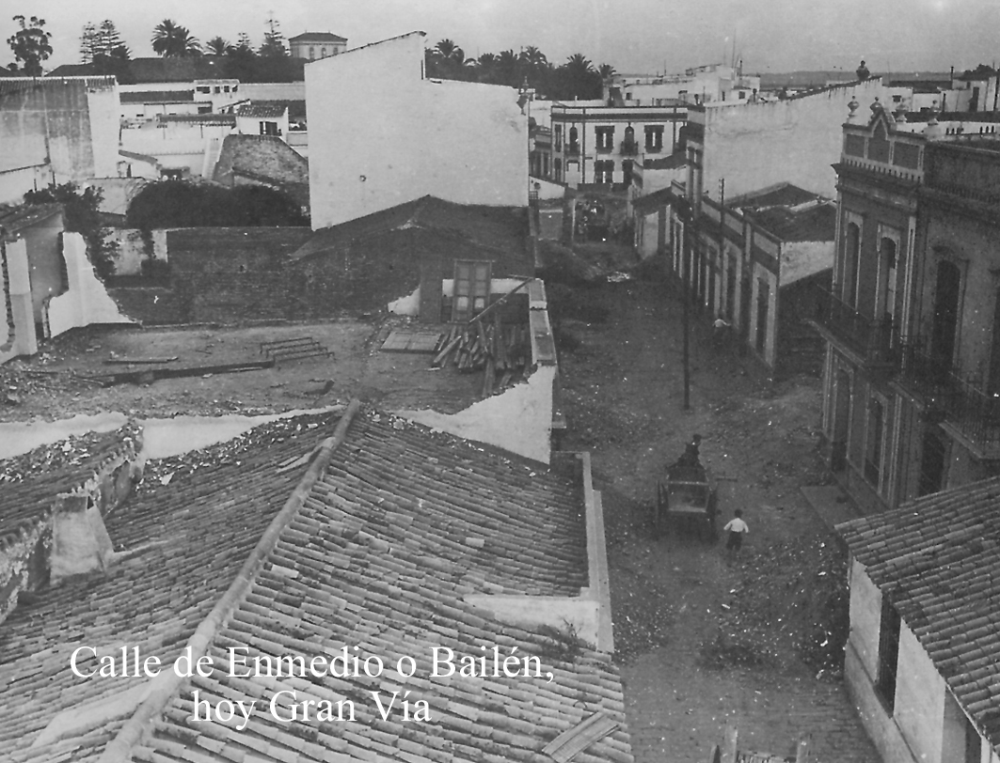
La Gran Vía
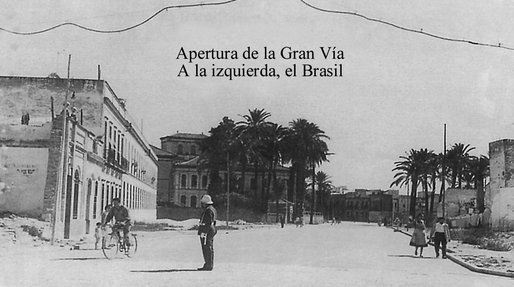
La Gran Vía
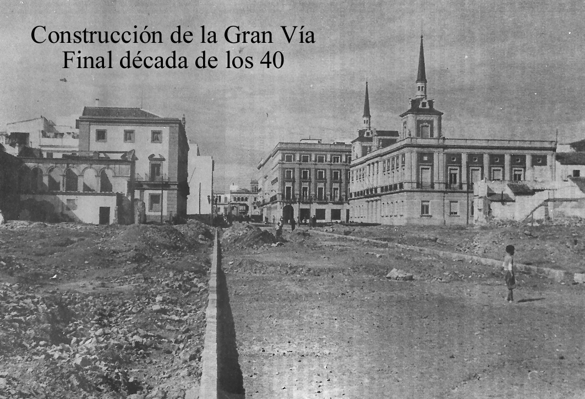
La Gran Vía
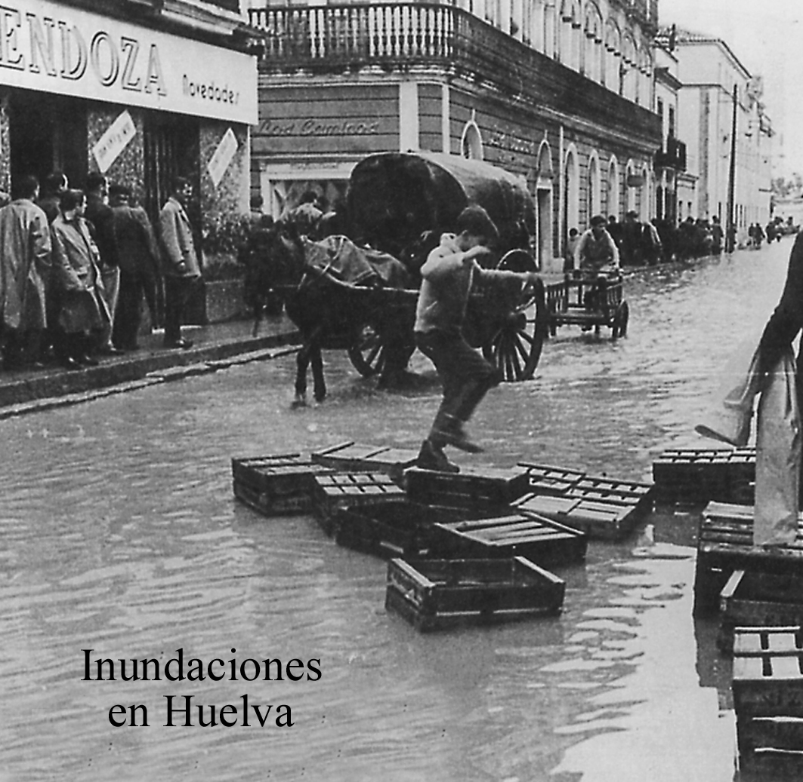
Inundaciones
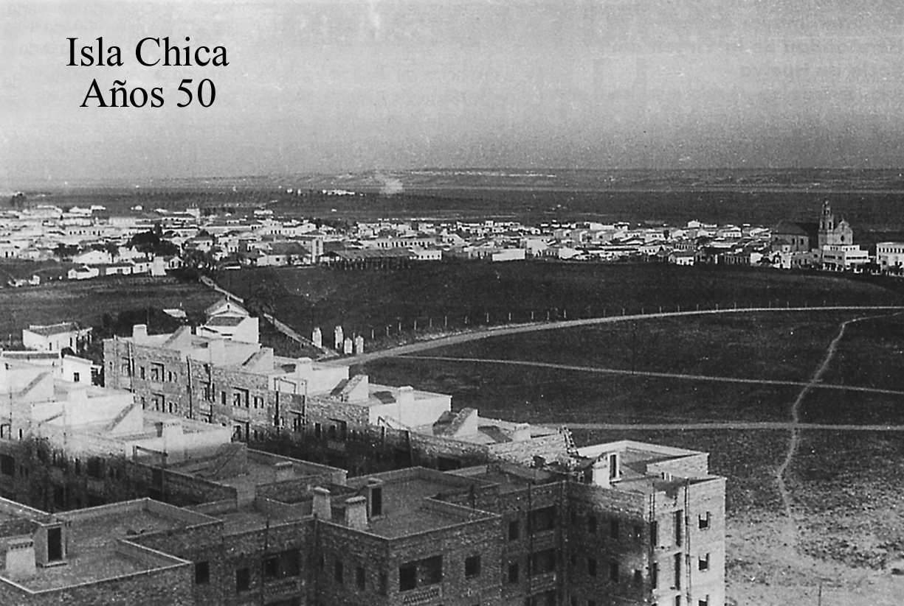
Isla Chica
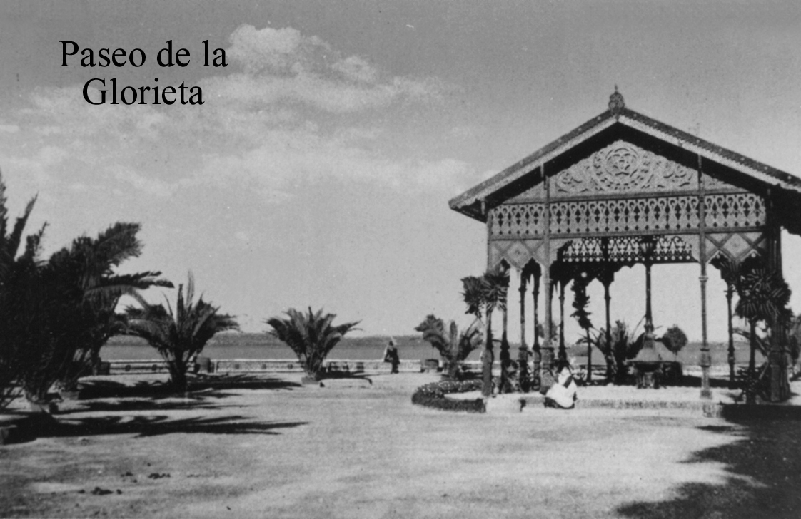
Paseo de la Glorieta
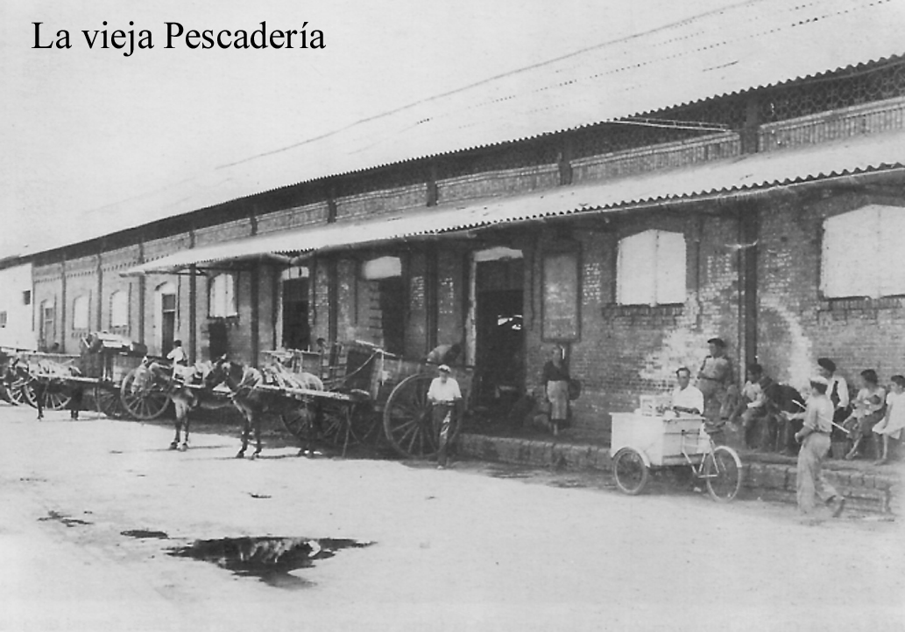
Pescadería
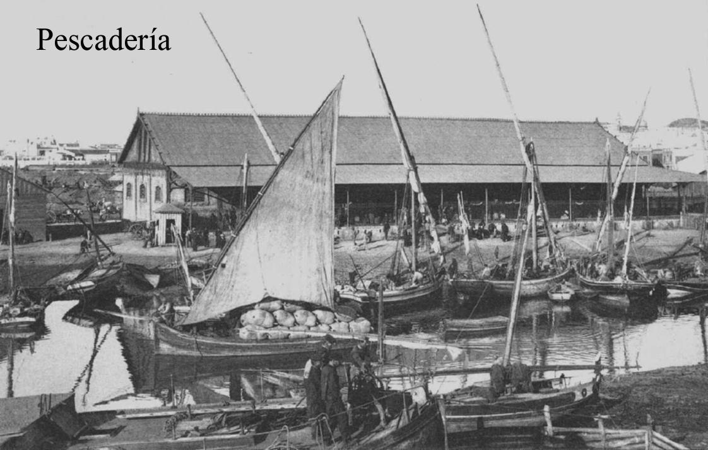
Pescadería
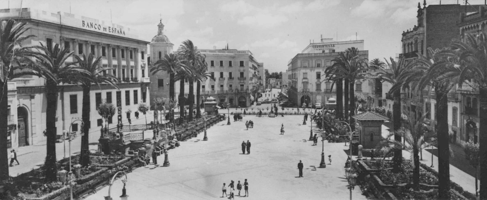
Plaza de las Monjas
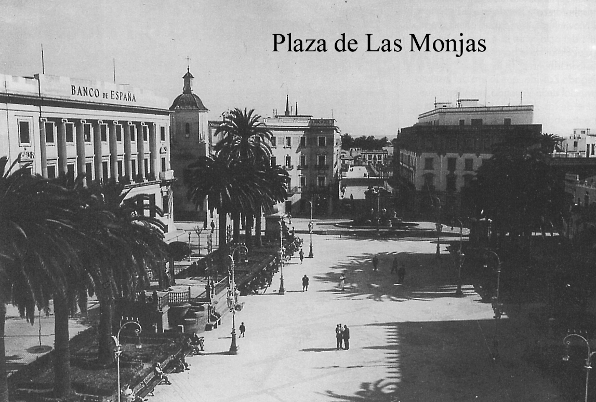
Plaza de las Monjas